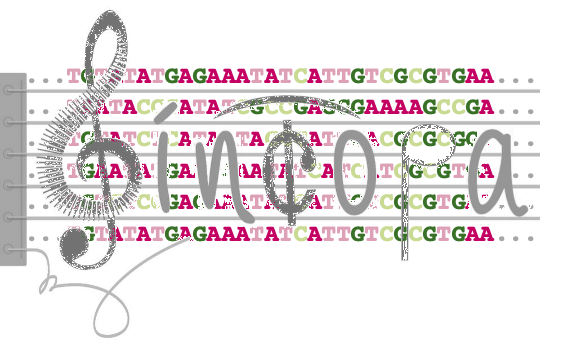

Detecting selective sweeps in bacteria based on
Similarity of INCOngruent PAtterns
Home
Overview
Terms of Use
Credits
All the project's source code of is available at:
https://github.com/orenavram/
SINCOPA
Acknowledgements:
This study was supported in part by a fellowship from the
Edmond J. Safra Center for Bioinformatics
at Tel Aviv University and Israel Science Foundation Grant No. 1282/17.
The
SINCOPA
web server,
SINCOPA
algorithm, and all scripts that are used in this pipeline were developed by
Oren Avram
and
Tal Pupko
from
The Shmunis School of Biomedicine and Cancer Research
.
Follow us on
Twitter
for updates!
Research Site |
Pupko Group